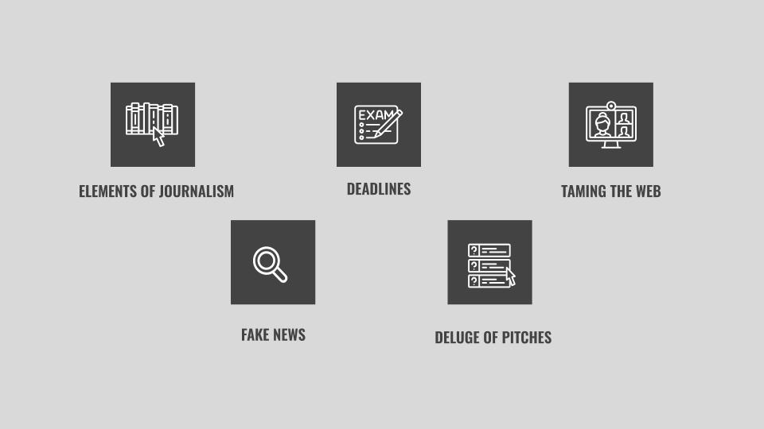
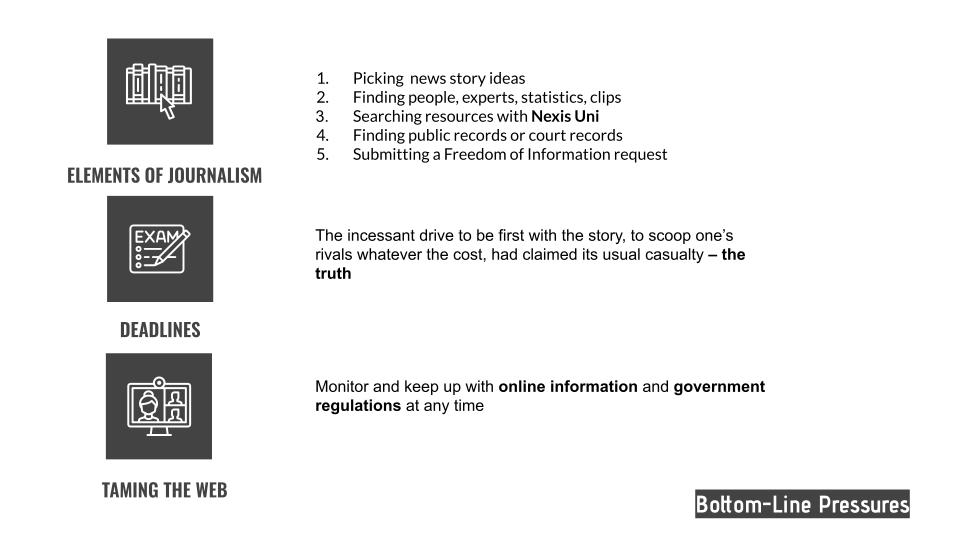
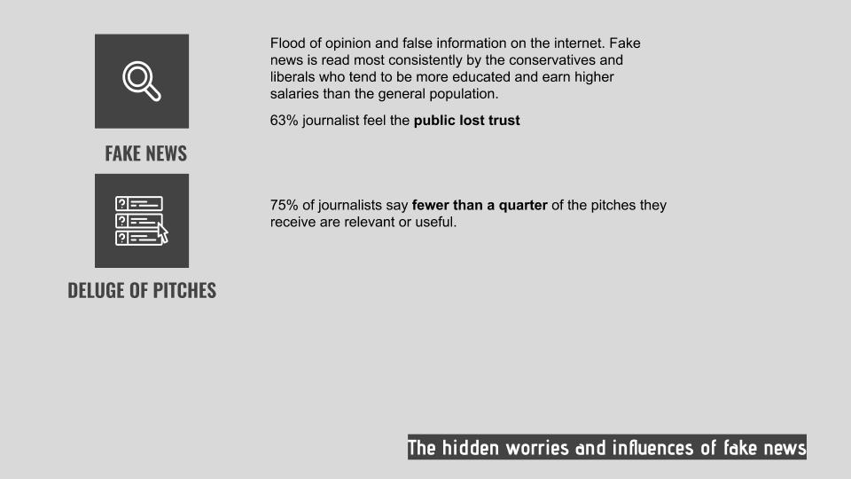

Each team was assigned to a specific question on IDA. This is what we got:
In what ways can we use different AI and ML techniques to continue to build out IDA pipeline processing?
Due to limited time, we reviewed great amount of literature and conducted an informal interview with a journalist. First, we brokedown the elements of journalism to understand their working pattern and key components. After that, we paid attention on what would be the potential harm in the working process.
  We found that the process of making a quality journalism requires times and efforts on research and data collection. However, the news cycle is too short to screen whether the information is right or not. The pressure to keep updating causes the problem that journalists might overlook the credibility of information's source.
The hidden worries of fake news need to be improved. We can use AI/ML to mitigate this problem on IDA.
Due to our research question focusing on techniques, we discussed much on functionality instead of UI. To analyze the site and its features and functions, we brokedown IDA's every touchpoint page by page. We believe IDA wants to emphasize its search engine and open datasets. Based on these two features, we sorted out the customer journey, stakeholders, and competitive analysis.
Users aim to find related content on IDA in a short time. Although it does provide filters, there're no preview or hightlight on the results page. It'll be time-consuming to figure out the document they want.
What makes IDA stand out is that users are able to upload any files including images, videos, text...on this platform. IDA can autogenerate tags from the contents which helps user to find data easier. Yet unreliable resources might come along if IDA don't provide any screening system.
In the results of competitve anaysis, we found all of them emphasized the improtance of accessibility especially for a searching engine. Obviously, it's necessary to make the IDA accessible.
Creating a well-researched, contextualized report in a short period of time.